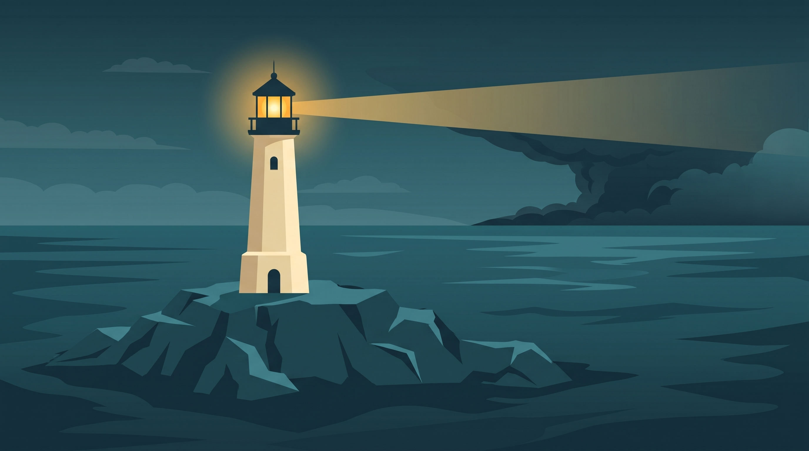
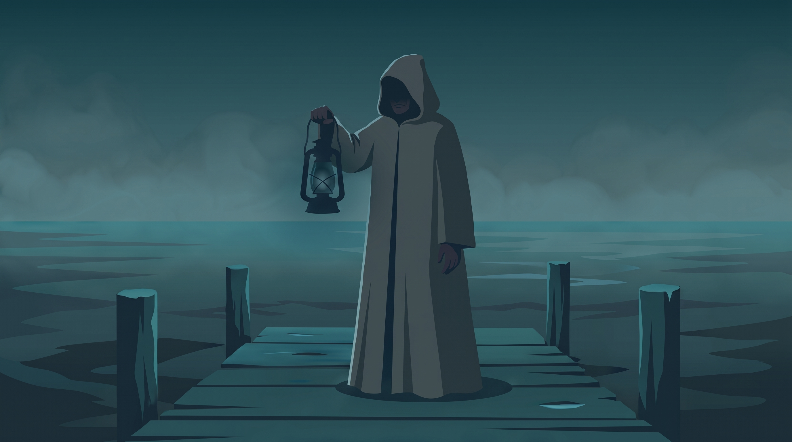
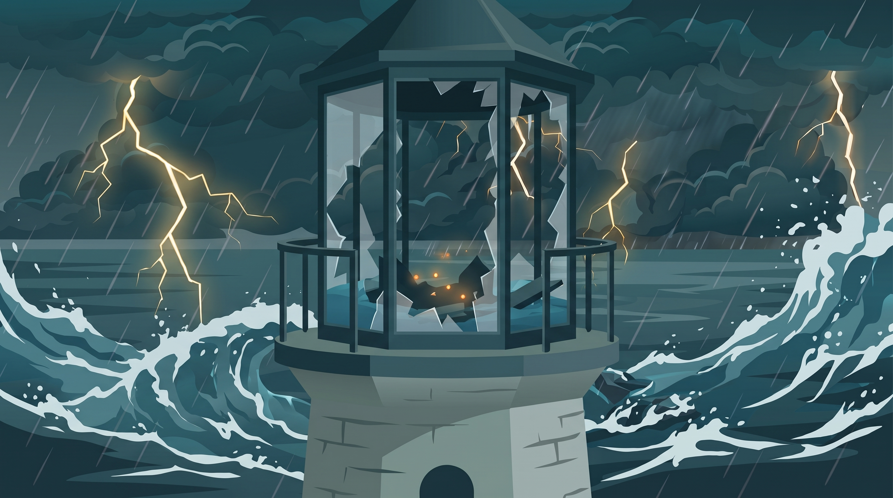
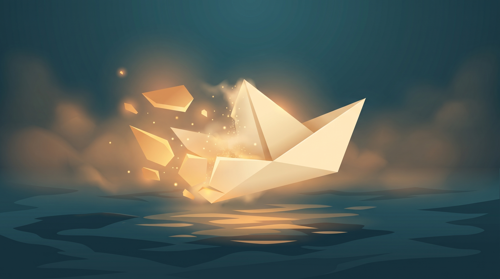

Направьте свет
Проявляйте силуэты ручным лучом и развивайте автоматический. Изучайте, что скрывает каждый спектр.





Видео не удалось загрузить. Открыть видео ↗
Станьте смотрителем маяка на краю реальности. Направляйте луч, собирайте свет и улучшайте маяк. В коротких возвращениях к морю складывается большое путешествие: новые спектры, странные встречи и следы, которые замечает только внимательный смотритель.Станьте смотрителем маяка на краю реальности. Направляйте луч, собирайте свет и улучшайте маяк. В коротких возвращениях к морю складывается большое путешествие.
Проявляйте силуэты ручным лучом и развивайте автоматический. Изучайте, что скрывает каждый спектр.
Бумажный корабль, чужой смотритель, ответная цепь. Собирайте сюжетные записи и находите связи между ними.
Великий шторм начинает новое плавание. Сохраняйте осколки и открывайте новые возможности оптики.

Готовимся открыть маяк первым игрокам. Показываем свежие скриншоты и игровой процесс перед выходом в ранний доступ.
⟶
Всё началось с маяка, луча и силуэтов в тумане. Рассказываем об идее игры и показываем первые кадры прототипа.
⟶«Море не стало пустым.
Просто мы разучились его видеть».
Готовим Lighthouse Beyond Idle к выходу в Google Play и RuStore. Здесь появятся ссылки на игру.
Игра проходит тестирование. Дата выхода пока не объявлена.